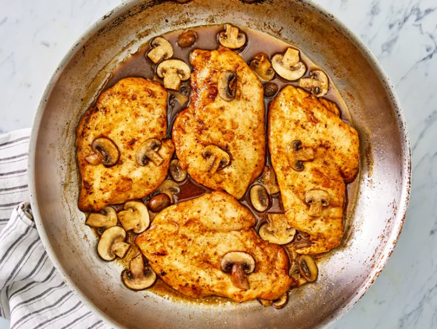

Chicken Marsala

Ingredients
- ¼ cup all-purpose flour for coating
- ½ teaspoon salt
- ¼ teaspoon ground black pepper
- ½ teaspoon dried oregano
- 4 medium skinless, boneless chicken breast halves - pounded 1/4 inch thick
- 4 tablespoons butter
- 4 tablespoons olive oil
- 1 cup sliced mushrooms
- ½ cup Marsala wine
- ¼ cup cooking sherry
Instructions
- Gather all ingredients.
- In a shallow dish or bowl, mix together the flour, salt, pepper and oregano.
- Coat chicken pieces in flour mixture.
- In a large skillet, melt butter in olive oil over medium heat. Place chicken in the pan, and lightly brown.
- Turn over chicken pieces, and add mushrooms. Pour in wine and sherry.
- Cover skillet; simmer chicken 10 minutes, turning once, until no longer pink and juices run clear.
- Serve hot and enjoy!
Acknowledgements
Adapted from All Recipes.